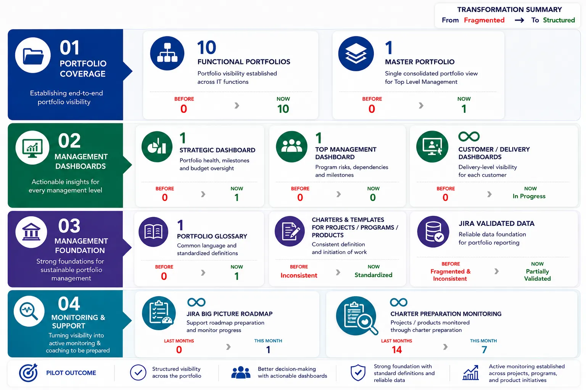
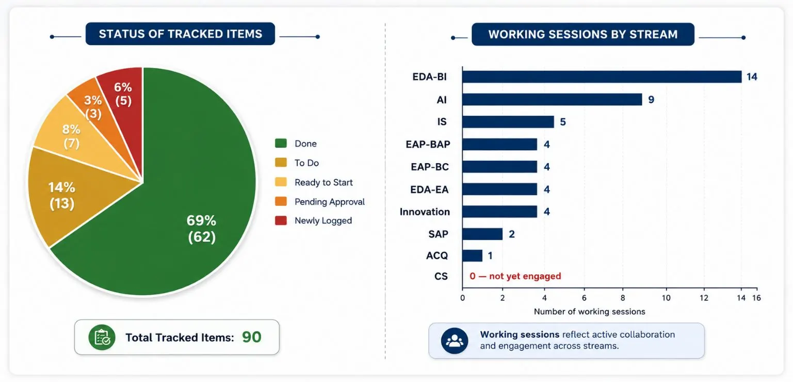
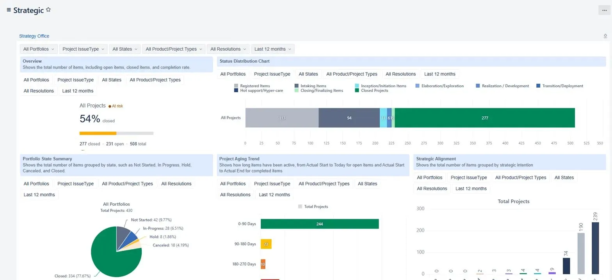
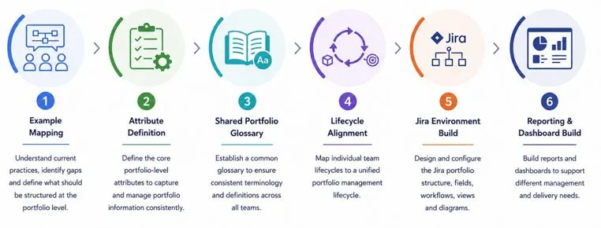
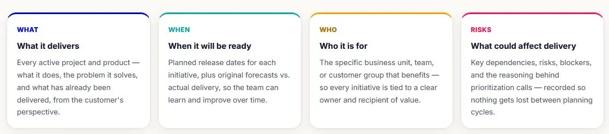
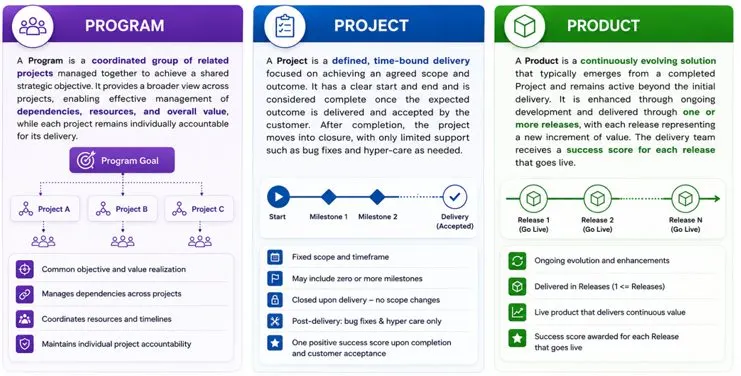
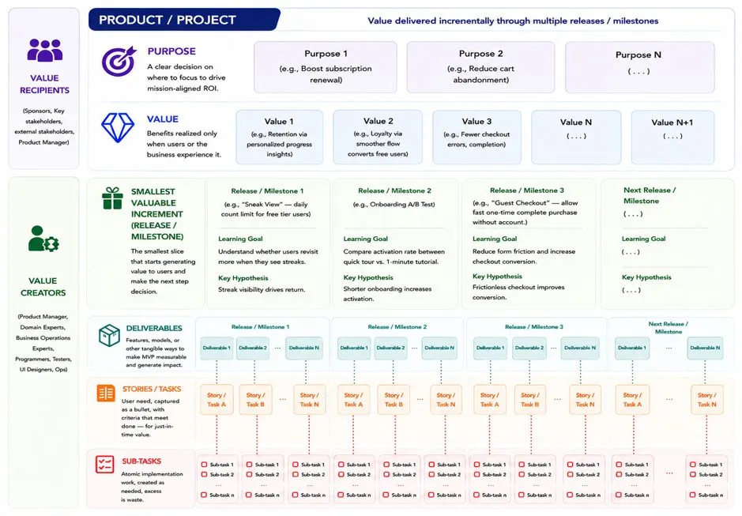

Turning IT strategy into transparent, prioritized, and value-driven execution across IT and the business.
The IT Portfolio provides transparency across IT and between IT and the business, giving senior stakeholders a trusted, high-level view of projects, products, and programs. It enables clear comparison of actual performance against plans, priorities, risks, and expected value, supporting informed decisions, alignment, and effective portfolio oversight.

IT Portfolio Management was established as a new capability — no formal portfolio governance function existed prior to this initiative. Over the reporting period, the function has moved from zero standardization to a working, glossary-backed governance model spanning ten portfolios.
The team defined a shared portfolio glossary, built governance artifacts (Program, Product, and Project Charters), aligned each delivery team's lifecycle to a single management lifecycle, and stood up the Jira-based environment used to capture portfolio data. In parallel, the team ran 47 working sessions with 9 delivery teams to gather requirements, correct data, and roll out the new structure, and closed 62 of 90 tracked governance and reporting action items to date.
At a high level, the pilot effort is distributed across the following key workstreams:
The image below provides a summary of the status of all tracked items over the four-month reporting period.

These examples showcase tools and artifacts developed from the live Jira environment, together with dashboards designed to support effective portfolio management, decision-making, and reporting.
At the top of the delivery team's reporting structure is a high-level portfolio report providing IT leadership and General Managers with a consolidated view of portfolio performance, progress, and key areas requiring attention.

Established the portfolio foundation by defining and standardizing portfolio information, terminology, and lifecycle requirements in the portfolio template and data set. These standards were then translated into the Jira environment and reporting layer to support consistent portfolio management, tracking, and analysis.

This section outlines the purpose, principles, and core concepts of portfolio management, focusing on how value is structured, delivered, and measured across initiatives. It defines the key portfolio objectives and the relationship between valuable increments, while providing a common foundation for the information, glossary, and fields used throughout the portfolio. A portfolio is designed to answer the following key questions for high-level initiatives:

The glossary defines the following main valuable increment across portfolio:

Value is delivered through a structured set of increments that connects strategic intent to tangible outcomes. Projects realize value through milestones, representing customer-agreed commitments within defined timeframes and, where applicable, linked to payment. Products evolve through releases based on product and IT priorities throughout the product lifecycle. Both ultimately translate into measurable deliverables and operational activities.

IT portfolio pilot is designed to establish a common, scalable approach to portfolio management, creating consistent governance, data, delivery practices, and reporting across IT teams. The following outlines the target vision and the implementation flow used to move toward it.
The pilot follows a progressive approach, moving from portfolio definition to operationalization, insight generation, and continuous improvement.
Identify current gaps and define the portfolio information needed to support management and delivery.
Establish the common lifecycle, attributes, terminology, and information structure required for portfolio management.
Implement the portfolio structure in Jira through standardized workflows, fields, and views, then analyze the captured data through management and delivery reports to generate insights and support informed decision-making.
Continuously capture, review, learn, and improve portfolio insights.
This section captures key challenges, open points, planned actions, and other relevant notes.
The remaining activities are focused on completing and enhancing the operational portfolio environment:
Work with the remaining teams to correct, validate, and complete portfolio data in Jira.
Build a real-time view of project delivery status by customer for business stakeholders, customers, and users, based on PO Team guidance.
Convert the existing charter templates into Confluence and integrate them with each team's Jira portfolio.
Enhance the Strategic Overview Dashboard to provide portfolio health, milestone, and budget visibility for CIO, PPM Managers, and the PPM Department, based on PO Team guidance.
Complete connectivity and alignment across the BRM, PE, and PO supporting functions to establish an integrated end-to-end portfolio management flow.
The following are the main challenges identified during the portfolio pilot:
Ensuring teams consistently understand and follow the agreed processes, data standards, terminology, governance rules, and Jira practices.
Linking business requests to the projects, products, and deliverables that address them, providing clear traceability from need to outcome.
Establishing the portfolio as a trusted, accurate, and current source of information for planning, tracking, and decision-making.